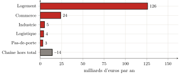

Troisième partie — Mesure empirique de la captation · Chapitre 11
11 La loi générale et son chiffrage
Les deux chapitres précédents ont mesuré, chacun pour son domaine, ce que les parties I et II avaient nommé sans encore le chiffrer. Il reste à faire la somme, et surtout à dire la loi qu’elle révèle, car un nombre, si grand soit-il, ne vaut que par le mécanisme qu’il met au jour. Ce chapitre clôt la partie empirique en additionnant les deux mesures, en formulant la loi qu’elles révèlent et en nommant ce que ce livre laisse à d’autres.
11.1 La somme : environ 162 milliards d’euros par an
Le compte est vite fait, car il n’a que deux termes. La rente résidentielle (le tribut que l’habitant acquitte dans son loyer, réel ou imputé) s’élève à 126 milliards d’euros par an (chapitre 9). La rente d’activité (celle que le commerçant, l’industriel, le logisticien acquittent sur leurs murs et reversent dans leurs prix, jusqu’au consommateur) ajoute de l’ordre de 36 milliards (chapitre 10). Au total, le tribut foncier prélevé en France sur l’accès à l’espace bâti avoisine 162 milliards d’euros par an (figure).

Rapportons ce nombre à des grandeurs familières. C’est près de 6 % du produit intérieur brut ; c’est, par foyer fiscal, de l’ordre de 329 euros par mois (256 pour le logement, 73 répercutés dans les prix), soit plus de deux mois de SMIC net captés chaque année ; c’est, enfin, près de deux fois le produit de l’impôt sur le revenu.1 Qu’une somme comparable à l’impôt sur le revenu soit prélevée, hors de tout vote et sans contrepartie productive, sur le seul fait d’occuper un lieu.
On le donnera pour ce qu’il est, sans le durcir. Le terme du logement est solide : il dérive des agrégats du SDES (chapitre 9) ; celui de l’activité est plus fragile, car le parc bâti est mal connu, mais il a été pris bas, et il est plus vraisemblablement un plancher qu’un plafond (chapitre 10). À côté, on a nommé et jaugé une autre extraction (les marges empilées de la chaîne qui produit le bâti, une quinzaine de milliards de profit « pur »), mais on l’a tenue hors du compte, parce qu’elle grève des biens reproductibles, non l’accès à un sol qui ne l’est pas. Le tribut foncier, lui, est bien d’environ 162 milliards : un ordre de grandeur, plutôt minoré, dont la robustesse importe moins que ce qu’il désigne.
11.2 La loi générale
Car sous la diversité des formes, le mécanisme est unique. Le loyer d’habitation, le loyer imputé du propriétaire occupant, le bail commercial, le pas-de-porte, l’intérêt que l’accédant verse sur le prix capitalisé de son sol — et, aux champs, le fermage du paysan — ne sont que les masques d’une même opération : la captation, par le détenteur d’un titre sur une portion de l’espace, d’un revenu de monopole sur l’accès à cette portion, sans contrepartie productive. Le sol ne produit pas, il conditionne (chapitre 1) ; la rente est le péage de ce conditionnement (chapitres 1 et 3) ; elle a pris, avec le capitalisme, sa forme accomplie — cessible, maximisable, capitalisable (chapitres 3 et 4) ; elle fonde une division de classe, l’usager et le rentier (chapitre 5) ; les catégories la dissimulent (chapitres 6 et 7), les théories la justifient (chapitre 8) ; et la mesure, enfin, en confirme la masse (chapitres 9 et 10). La loi n’est pas déduite d’un principe : elle est l’invariant qui demeure quand on a retiré, une à une, toutes les formes particulières.
Cet invariant n’a rien de neuf ; il est seulement, aujourd’hui, à son comble. Le tribut sur l’accès au sol est aussi vieux que la cité sédentaire : on l’a vu naître à Uruk, où le temple puis le palais allouaient la terre et prélevaient sur son usage (chapitre 2). Ce qui a changé n’est pas l’existence du prélèvement, mais sa forme. La tenure conditionnelle et inaliénable de la cité-temple, la redevance coutumière et non maximisable du fief, ont cédé à la propriété absolue du Code civil — « le droit de jouir et disposer des choses de la manière la plus absolue » — qui rend le titre cessible et la rente maximisable. Le prix n’a pas inventé le tribut : il l’a universalisé et porté à son maximum, en faisant de l’accès au sol une marchandise comme une autre. Les 162 milliards mesurés sont le visage contemporain, capitaliste, du plus vieux problème politique des sociétés sédentaires : comment allouer l’espace raréfié par le nombre ?
11.3 Ouverture : la question paysanne
Cette loi trouve sa forme la plus achevée non dans la ville, mais aux champs — et c’est par là que ce livre désigne ce qu’il laisse à d’autres. Le paysan est pris dans le tribut de l’espace plus complètement que tout autre, parce qu’il en cumule les deux faces. En amont, l’étranglement : le foncier agricole d’abord (le fermage est la forme rurale du même péage), mais aussi le verrou des semences, du crédit, des machines, de l’énergie, ces conditions de la production que des oligopoles détiennent. En aval, la capture : les transformateurs et la grande distribution, qui tiennent l’accès au marché et fixent les prix. Entre les deux, sous la contrainte d’un libre-échange avec des espaces aux normes sociales et écologiques inférieures, la marge du producteur est comprimée jusqu’à l’os.
On reconnaîtra, dans cet amont et cet aval, la distinction que le chapitre 10 a tenue : le fermage est rente de l’espace au sens strict ; l’étranglement par les semences ou la distribution est l’extraction voisine, oligopolistique, qui grève les conditions de la production sans être à proprement parler une rente foncière. Les mesurer l’une et l’autre, avec la même discipline, reviendra à d’autres. Cette mesure montrerait surtout pourquoi le paysan réalise la loi à son plus haut point : parce qu’il est, lui, tout à la fois l’usager et le producteur, doublement pris — payant pour accéder à la terre qu’il travaille, et dépouillé de ce qu’il en tire.
C’est le sens des deux articles qui sont à l’origine de ce travail2 : ce livre a mesuré le tribut sur l’habitant et le travailleur ; le tribut sur le paysan reste à mesurer. L’un et l’autre conduisent à la même question, que la mesure ne fait que rendre inévitable. On sait maintenant combien l’on prélève sur l’accès à l’espace, et que ce prélèvement n’a pas de contrepartie productive. La question cesse alors d’être comptable pour devenir politique : non plus « combien ? », mais « doit-il en être ainsi ? ». C’est l’objet de la dernière partie.
Bilan
La partie III a fait l’inventaire que les deux premières avaient préparé. Elle établit qu’en France, l’accès à l’espace bâti est grevé d’un tribut d’environ 162 milliards d’euros par an (la rente du logement et celle de l’activité réunies), prélevé sans contrepartie productive, et plus vraisemblablement minoré que majoré. Elle montre que, sous la diversité des loyers, baux et intérêts, ce tribut obéit à une loi unique : la captation d’un revenu de monopole sur l’accès au sol, forme capitaliste accomplie d’un prélèvement aussi ancien que la cité. Et elle laisse, à dessein, hors de son compte ce qui n’en relève pas : les marges de la chaîne productive, extraction voisine mais distincte. Reste à tirer de ce constat sa conséquence : si le tribut n’est qu’une forme historique parmi d’autres de l’allocation du sol, alors une autre allocation est possible. C’est ce que la partie IV entreprend de penser.
PIB 2023 : 2 803 Md€. Foyers fiscaux : 41 millions (DGFiP). SMIC net mensuel 2026 : ≈ 1 443 €. Impôt sur le revenu : ≈ 92 Md€/an. Le détail et les sources de chaque ligne sont aux chapitres 9 et 10.↩︎
« Erst Essen, dann Miete » ((Portalez 2024a)) fournit la matrice de la dernière partie de ce livre — le logement à l’habitant ; « Paysans et capitalisme » ((Portalez 2024b)) pose la question paysanne — la terre à ceux qui la travaillent.↩︎